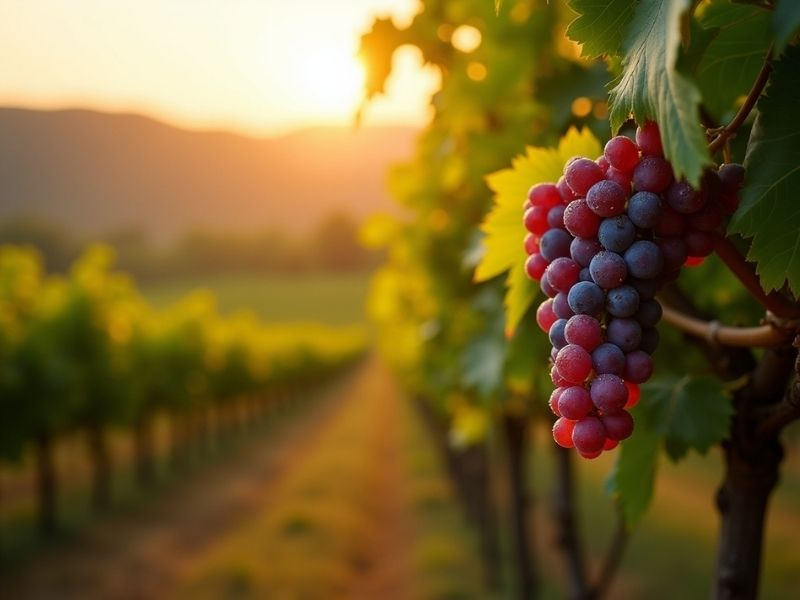
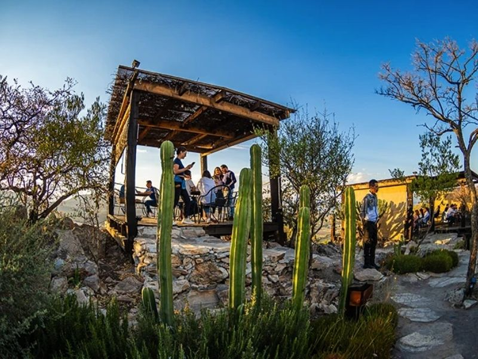
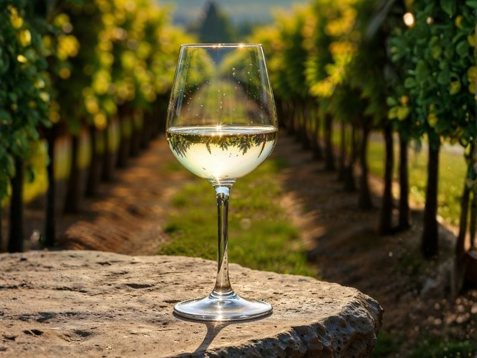
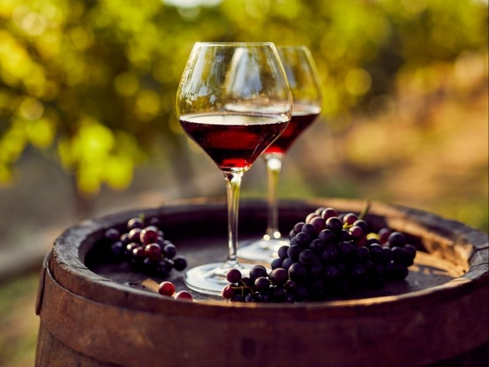
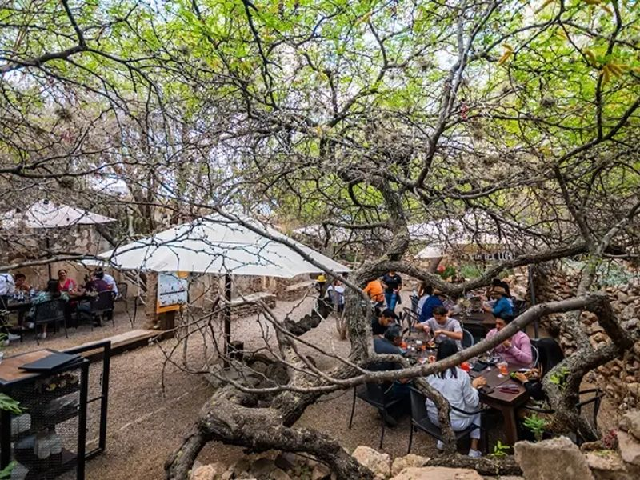
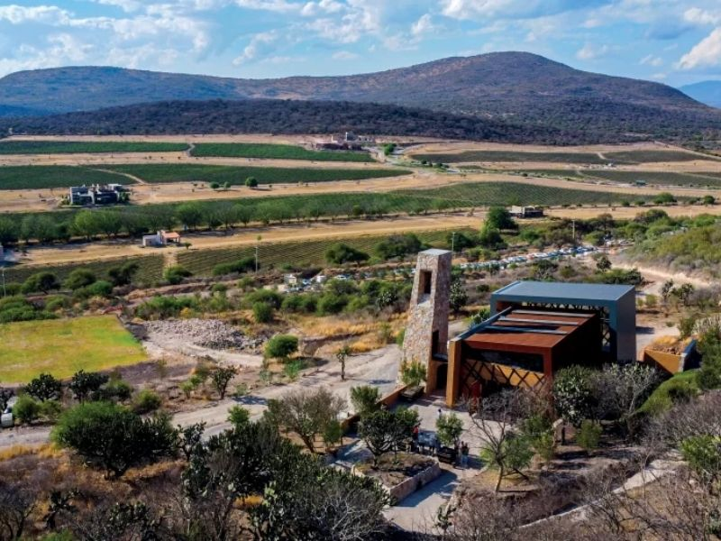

Una atmósfera premium, relajante y exclusiva en el corazón de Querétaro.
Reserva tu experiencia
Conoce la tradición, el cuidado y la pasión detrás de cada una de nuestras vides.

Descubre nuestros paisajes excepcionales en el estado de Querétaro.
Una selección pensada para paladares exigentes y amantes de la cultura del vino.

Notas frescas y afrutadas ideales para acompañar la tarde.

Cuerpo y elegancia tras meses de añejamiento en barrica.
Adéntrate en nuestros recorridos y conoce el proceso de elaboración.

Explora el viñedo de forma tradicional culminando con una cata guiada exclusiva.

Gastronomía de alto nivel y experiencias instagrameables enfocadas en el consumo local.
Opciones de hospedaje: Disfruta del máximo confort en nuestras instalaciones de Hotel y Glamping de lujo.